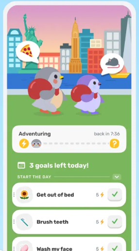
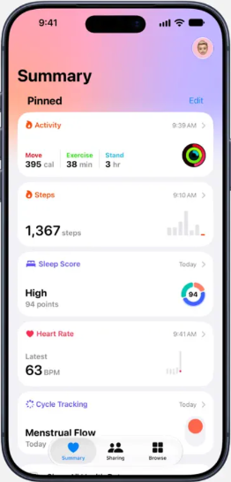
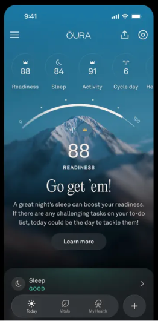

W07 · DAY 1–3 · 每日主页
今日首页
页面目标：3 秒看懂「步步怎么样、我今天还差什么」。
1
步步场景卡占首屏约 1/4，每天形态不同；步步用对话气泡说出今天最需要的养分。点它会回应，长按语音对话。参考 Finch
2
3 天进度用阶段名代替百分比；漏录时停在原处，不倒退。
3
养分卡片：图标 + 标签 + 时间 / 结果 + 一句对比。缺的项变成虚线卡并直接带录入按钮，少一次跳转。参考 Apple 健康
4
一句话洞察 + 微行动，末尾「问问步步」带着上下文进入 AI 对话。异常时这张卡变为 W09 的 L1 提示。参考 Oura
5
多模态 悬浮标签栏 + 独立录入按钮：点按打开 W06；长按直接语音，按下即轻震。


